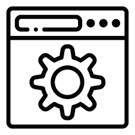

Hola, soy Izan Marcos Martínez
 Desarrollador backend en formación | Apasionado por la IA y el Big Data
Alicante, España
 2º DAM
19 años
2º DAM
19 años
2º DAM
19 años
Responsable
Constante
Creativo
Aprendiz de IA
Soy un estudiante de Desarrollo de Aplicaciones Multiplataforma con una gran pasión por la tecnología.
Me defino como una persona responsable, constante y con hambre de conocimiento.
Aspiro a dominar las tecnologías que utilizo cada día y especializarme en Inteligencia Artificial y Big Data.
"El código es el arte de transformar ideas en realidad."